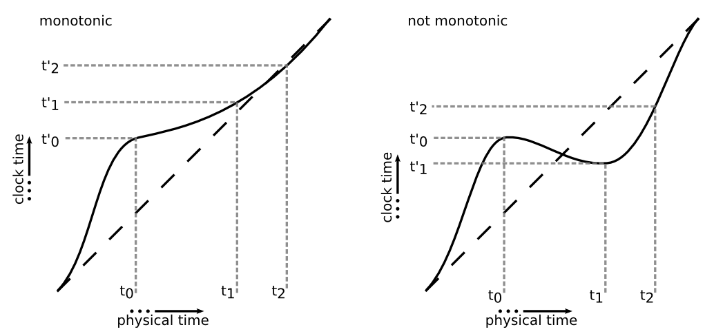
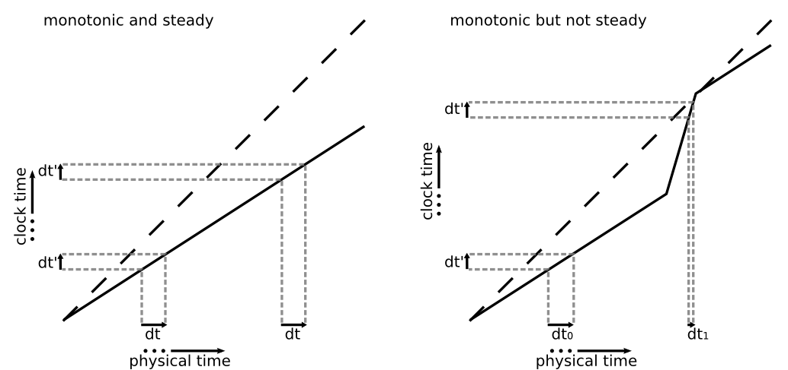

qi clocks¶
Libqi provides types to model clocks, time points and durations. The implementation is based on boost::chrono. You can thus refer to boost::chrono documentation or to your favourite C++11 book for a detailed description. Here is a short introduction to the concepts though.
Concepts¶
- Duration
- A span of time, defined as some number of ticks of some time unit. libqi defines durations types with various units.
- Clocks
- A clock consists of a starting point (or epoch) and a tick rate. libqi defines several clocks, see Clocks.
- Time point
- A reference to a specific point in time defined as the duration of time that has passed since the epoch of a specific clock.
Warning
While a default-constructed time point has a well-defined value (equal to its clock epoch), a default-constructed duration is not required to be zero-initialized.
Clock properties¶
libqi exposes several clocks, each of which having a distinctive set of properties.
Possible properties are:
- monotonicity
A clock is monotonic if the time points of this clock cannot decrease as physical time moves forward.
- steadiness
A clock is steady if the physical time between its ticks is constant. This property implies monotonicity.
- system-wideness
- A clock C may be system-wide. In such a case, all programs on the system calling C::now() at the same time should get the same value.
- relation to “real time wall clock”
- A clock may represent “real wall clock” time. In such a case its time points are convertible to calendar time. Such a clock is usually not steady nor monotonic in order to enable the adjustment of the clock.
Clocks¶
Libqi provides three clocks:
qi::SteadyClock- monotonic and steady clock, but not system-wide. Its epoch is unspecified, but typically related only to the program invocation (eg. the program starting time). Similar to std::chrono::steady_clock. This clock is best suitable for measuring intervals.
qi::Clock- system-wide clock, best suitable for timestamps. Typically monotonic and unaffected by the system clock adjustment, altough this is not guaranteed.
qi::SystemClock- system-wide real time wall clock. Similar to std::chrono::system_clock. This clock is best used when calendar time is needed. It may also be useful in specific cases for inter-system communication, assuming the systems involved do synchronize their system clocks.
Example¶
Let’s use libqi to time some long computation and display it duration in milliseconds.
#include <qi/clock.hpp>
#include <iostream>
void long_computation() {
// ...
}
int main() {
qi::SteadyClock::time_point start = qi::SteadyClock::now();
long_computation();
qi::SteadyClock::time_point end = qi::SteadyClock::now();
qi::MilliSeconds ms = boost::chrono::duration_cast<qi::MilliSeconds>(end - start);
std::cout << "spent " << qi::to_string(ms) << std::endl;
return 0;
}
Or a slightly shorter version
#include <qi/clock.hpp>
#include <iostream>
void long_computation() {
// ...
}
int main() {
qi::SteadyClock::time_point start = qi::SteadyClock::now();
long_computation();
std::cout << "spent " << qi::to_string(qi::durationSince<qi::MilliSeconds>(start)) << std::endl;
return 0;
}
Rationale¶
libqi heavily uses boost::chrono but does not directly expose the boost::chrono clocks. There are several reasons for this choice:
- in order to be usable through the middleware, the concrete duration and time point types need to be defined in a platform-independent way. This is not the case of boost::chrono clocks types.
- we could add some time control API for simulation purposes.
- boost::chrono::steady_clock is defined to be system-wide, but C++11’s std::chrono::steady_clock does not make this promise. By default, we prefer to stick to the standard over boost.
- we need a monotonic system-wide clock. Since std::chrono::steady_clock is not system-wide, then we need to add a third clock (qi::Clock) anyway.
Summary¶
namespace qi
class qi::SteadyClock
Functions (class qi::SteadyClock)
Members (class qi::SteadyClock)
class qi::SystemClock
Functions (class qi::SystemClock)
Members (class qi::SystemClock)
class qi::Clock
Functions (class qi::Clock)
Members (class qi::Clock)
Classes (namespace qi)
Functions (namespace qi)
Global Namespaces
Global Members
Detailed Description¶
Reference¶
-
typedef
qi::NanoSeconds
- typedef DurationType< int64_t, boost::nano > NanoSeconds¶
- typedef DurationType< int64_t, boost::micro > MicroSeconds¶
- typedef DurationType< int64_t, boost::milli > MilliSeconds¶
- typedef DurationType< int64_t, boost::ratio< 1 >> Seconds¶
- typedef DurationType< int64_t, boost::ratio< 60 >> Minutes¶
- typedef DurationType< int64_t, boost::ratio< 3600 >> Hours¶
qi::SteadyClock Class Reference¶
Enumerations¶
-
enum
Expect¶ Brief: Enum expected argument.
Name Brief Expect_SoonerOrLaterPick the nearest result to user-provided reference. Expect_LaterResult is expected to be later than user-provided reference. Expect_SoonerResult is expected to be sooner than user-provided reference.
Public Members¶
-
typedef
time_point -
bool
is_steady
Types¶
- typedef Duration::rep rep¶ The representation type of the duration and time_point.
- typedef Duration::period period¶ The tick period of the clock in nanoseconds.
-
typedef
qi::Duration
The duration type of the clock.
- typedef TimePoint< SteadyClock > time_point¶ The time_point type of the clock. Different clocks are permitted to share a time_point definition if it is valid to compare their time_points by comparing their respective durations.
Detailed Description¶
The time points of this clock cannot decrease as physical time moves forward. This clock is not related to wall clock time, and is best suitable for measuring intervals.
Function Documentation¶
-
static time_point
qi::SteadyClock::now()¶ Returns a time_point representing the current value of the clock.
qi::Clock Class Reference¶
Introduction¶
The Clock class represents a system-wide clock, best suitable for timestamping events. Typically monotonic and unaffected by the system clock adjustment, altough this is not guaranteed. More...
#include <qi/clock.hpp>
Enumerations¶
-
enum
Expect¶ Brief: Enum expected argument.
Name Brief Expect_SoonerOrLaterPick the nearest result to user-provided reference. Expect_LaterResult is expected to be later than user-provided reference. Expect_SoonerResult is expected to be sooner than user-provided reference.
Public Static Functions¶
-
time_point
now -
uint32_t
toUint32ms -
int32_t
toInt32ms -
time_point
fromUint32ms -
time_point
fromInt32ms
Types¶
- typedef Duration::rep rep¶ The representation type of the duration and time_point.
- typedef Duration::period period¶ The tick period of the clock in nanoseconds.
-
typedef
qi::Duration
The duration type of the clock.
- typedef boost::chrono::time_point< Clock > time_point¶ The time_point type of the clock. Different clocks are permitted to share a time_point definition if it is valid to compare their time_points by comparing their respective durations.
Detailed Description¶
Members Documentation¶
Function Documentation¶
-
static time_point
qi::Clock::now()¶ Returns a time_point representing the current value of the clock.
-
static uint32_t
qi::Clock::toUint32ms(const time_point& t)¶ Brief: Convert the time point to a number of milliseconds on 32 bits.
Parameters: - t – The time point to convert.
Returns: Unsigned int representing the time.
Since the 32 bits number overflows every 2^32 ms ~ 50 days, this is a lossy operation.
-
static int32_t
qi::Clock::toInt32ms(const time_point& t)¶ Brief: Convert the time point to a number of milliseconds on 32 bits.
Parameters: - t – The time point to convert.
Returns: Integer (int) representing the time.
Since the 32 bits number overflows every 2^32 ms ~ 50 days, this is a lossy operation.
-
static time_point
qi::Clock::fromUint32ms(uint32_t t_ms, time_point guess, Expect expect = Expect_SoonerOrLater)¶ Since the 32 bits number overflows every ~50 days, an infinity of time points match a given 32 bits number (all modulo ~50 days). This function picks the result near the guess timepoint depending on the expect argument:
if expect == LATER, result is expected to be later than guess: guess <= result < guess + periodif expect == SOONER, result is expected to be sooner than guess: guess - period < result <= guessif expect == SOONER_OR_LATER, pick the nearest result: guess - period/2 < result <= guess + period/2
where period == 2^32 ms ~ 50 days
-
static time_point
qi::Clock::fromInt32ms(int32_t t_ms, time_point guess, Expect expect = Expect_SoonerOrLater)¶ Since the 32 bits number overflows every ~50 days, an infinity of time points match a given 32 bits number (all modulo ~50 days). This function picks the result near the guess timepoint depending on the expect argument:
if expect == LATER, result is expected to be later than guess: guess <= result < guess + periodif expect == SOONER, result is expected to be sooner than guess: guess - period < result <= guessif expect == SOONER_OR_LATER, pick the nearest result: guess - period/2 < result <= guess + period/2
where period == 2^32 ms ~ 50 days
qi::SystemClock Class Reference¶
Introduction¶
The SystemClock class represents the system-wide real time wall clock. It may not be monotonic: on most systems, the system time can be adjusted at any moment. More...
#include <qi/clock.hpp>
Public Members¶
-
typedef
time_point -
bool
is_steady
Public Static Functions¶
-
time_point
now -
std::time_t
to_time_t -
time_point
from_time_t
Types¶
- typedef Duration::rep rep¶ The representation type of the duration and time_point.
- typedef Duration::period period¶ The tick period of the clock in nanoseconds.
-
typedef
qi::Duration
The duration type of the clock.
- typedef boost::chrono::time_point< SystemClock > time_point¶ The time_point type of the clock. Different clocks are permitted to share a time_point definition if it is valid to compare their time_points by comparing their respective durations.
Detailed Description¶
Members Documentation¶
-
typedef
time_point
Function Documentation¶
-
static time_point
qi::SystemClock::now()¶ Returns a time_point representing the current value of the clock.
-
static std::time_t
qi::SystemClock::to_time_t(const time_point& t)¶ Brief: Converts a system clock time point to std::time_t.
Parameters: - t – Time point to convert.
Returns: A std::time_t representing t.
-
static time_point
qi::SystemClock::from_time_t(const std::time_t& t)¶ Brief: Converts std::time_t to a system clock time point.
Parameters: - t – std::time to convert.
Returns: A time point representing t.
-
typedef
qi::SteadyClock::time_point
Steady clock time point.
-
typedef
qi::Clock::time_point
qi::Clock time point.
-
typedef
qi::SystemClock::time_point
System clock time point.
Functions¶
-
void
qi::sleepFor(const qi::Duration& d)¶ Blocks the execution of the current thread for at least d.
-
void
qi::sleepUntil(const SteadyClockTimePoint& t)¶ This is equivalent to sleepFor(t - SteadyClockTimePoint::now())
-
void
qi::sleepUntil(const ClockTimePoint& t)¶ Blocks the execution of the current thread until t has been reached.
-
void
qi::sleepUntil(const SystemClockTimePoint& t)¶ Adjustments of the clock are taken into account. Thus the duration of the block might, but might not, be less or more than t - SystemClock::now()
-
std::string
qi::toISO8601String(const SystemClockTimePoint& t)¶ For instance the string for a quarter past nine PM on April 3rd, 2001 is “2001-04-03T211500.000Z”
- template<class DurationTo, class TimePointFrom>
-
DurationTo
qi::durationSince(const TimePointFrom& t)¶ Returns the duration elapsed since t.